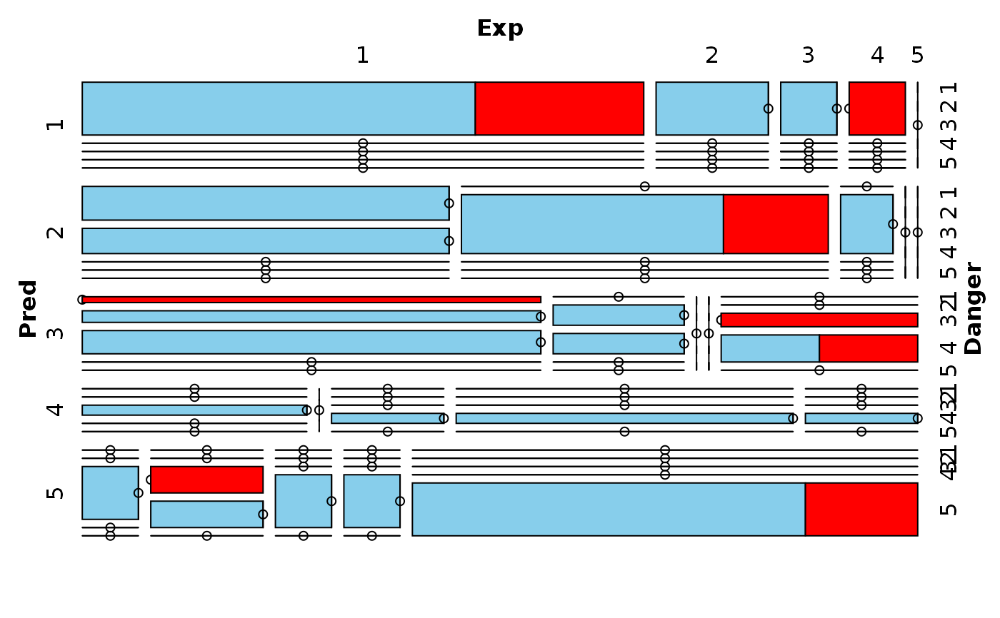
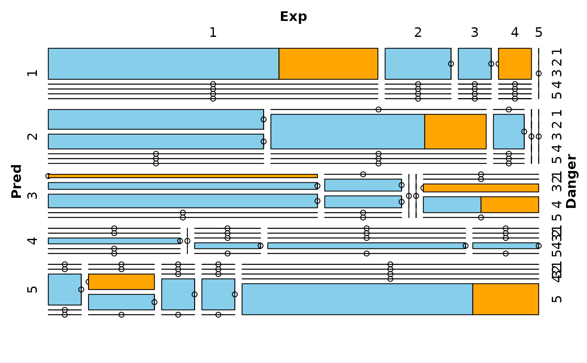

Create a mosaic plot with information about missing/imputed values.
mosaicMiss( x, delimiter = NULL, highlight = NULL, selection = c("any", "all"), plotvars = NULL, col = c("skyblue", "red", "orange"), labels = NULL, miss.labels = TRUE, ... )
| x | a matrix or |
|---|---|
| delimiter | a character-vector to distinguish between variables and
imputation-indices for imputed variables (therefore, |
| highlight | a vector giving the variables to be used for highlighting.
If |
| selection | the selection method for highlighting missing/imputed
values in multiple highlight variables. Possible values are |
| plotvars | a vector giving the categorical variables to be plotted. If
|
| col | a vector of length three giving the colors to be used for observed, missing and imputed data. If only one color is supplied, the tiles corresponding to observed data are transparent and the supplied color is used for highlighting. |
| labels | a list of arguments for the labeling function
|
| miss.labels | either a logical indicating whether labels should be plotted for observed and missing/imputed (highlighted) data, or a character vector giving the labels. |
| ... | additional arguments to be passed to |
An object of class "structable" is returned invisibly.
Mosaic plots are graphical representations of multi-way contingency tables. The frequencies of the different cells are visualized by area-proportional rectangles (tiles). Additional tiles are be used to display the frequencies of missing/imputed values. Furthermore, missing/imputed values in a certain variable or combination of variables can be highlighted in order to explore their structure.
This function uses the highly flexible strucplot framework of
package vcd.
Meyer, D., Zeileis, A. and Hornik, K. (2006) The
strucplot framework: Visualizing multi-way contingency tables with
vcd. Journal of Statistical Software, 17 (3), 1--48.
M. Templ, A. Alfons, P. Filzmoser (2012) Exploring incomplete data using visualization tools. Journal of Advances in Data Analysis and Classification, Online first. DOI: 10.1007/s11634-011-0102-y.
Other plotting functions:
aggr(),
barMiss(),
histMiss(),
marginmatrix(),
marginplot(),
matrixplot(),
pairsVIM(),
parcoordMiss(),
pbox(),
scattJitt(),
scattMiss(),
scattmatrixMiss(),
spineMiss()
Andreas Alfons, modifications by Bernd Prantner
data(sleep, package = "VIM") ## for missing values mosaicMiss(sleep, highlight = 4, plotvars = 8:10, miss.labels = FALSE)## for imputed values mosaicMiss(kNN(sleep), highlight = 4, plotvars = 8:10, delimiter = "_imp", miss.labels = FALSE)